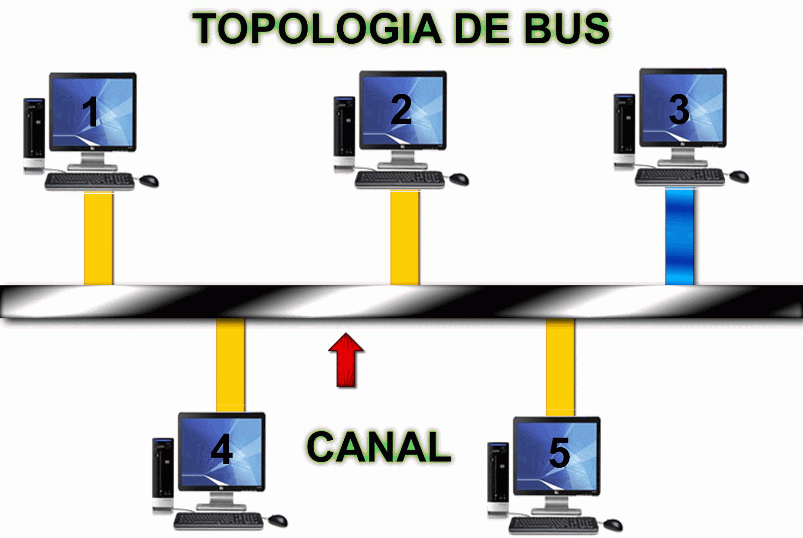
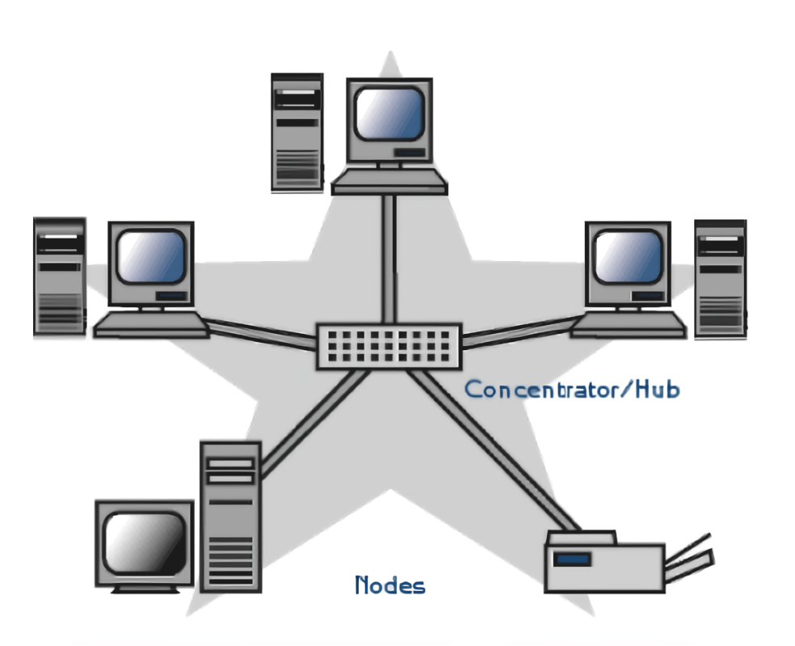

Topologías
La topología de red se define como la cadena de comunicación usada por los nodos que conforman una red para comunicarse. La arquitectura o topología de red es la disposición física en la que se conectan los nodos, es decir, la conjunción del método de cableado y la metodología de conexión, hay varios tipos de topologías encontrándose entre las más frecuentes y accesibles:
TIPO BUS:
En este tipo de topología todos los equipos se conectan sobre un mismo tramo de cable, La topología de bus permite que todos los dispositivos de la red puedan ver todas las señales de todos los demás dispositivos, lo que puede ser ventajoso si desea que todos los dispositivos obtengan esta información. Sin embargo, puede representar una desventaja, ya que es común que se produzcan problemas de tráfico y colisiones, que se pueden paliar segmentando la red en varias partes. Es la topología más común en pequeñas LAN, con hub o switch final en uno de los extremos. También representa una desventaja ya que si el cable se rompe, niguno de los servidores siguientes tendra acceso a la red.
TIPO ANILLO:
En este tipo de topología todos los equipos se conectan sobre un mismo tramo de cable, La topología de bus permite que todos los dispositivos de la red puedan ver todas las señales de todos los demás dispositivos, lo que puede ser ventajoso si desea que todos los dispositivos obtengan esta información. Sin embargo, puede representar una desventaja, ya que es común que se produzcan problemas de tráfico y colisiones, que se pueden paliar segmentando la red en varias partes. Es la topología más común en pequeñas LAN, con hub o switch final en uno de los extremos. También representa una desventaja ya que si el cable se rompe, niguno de los servidores siguientes tendra acceso a la red.

TIPO ESTRELLA:
Esta topología es una de las más utilizadas hoy en día. En esta red todos los equipos van a estar conectados entre sí, no directamente, sino por medio de un HUB o concentrador el cual cumple la función de una especie de central telefónica, interconectando todas las máquinas. En este caso como mayormente se utiliza cable de par trenzado el sistema de datos es full-duplex , logrando de esta forma mayor velocidad de transmisión y recepción de datos. El sistema de transmisión es codificando la señal inicial, la cual al ser escuchada por el equipo con el mismo código es decodificado.
